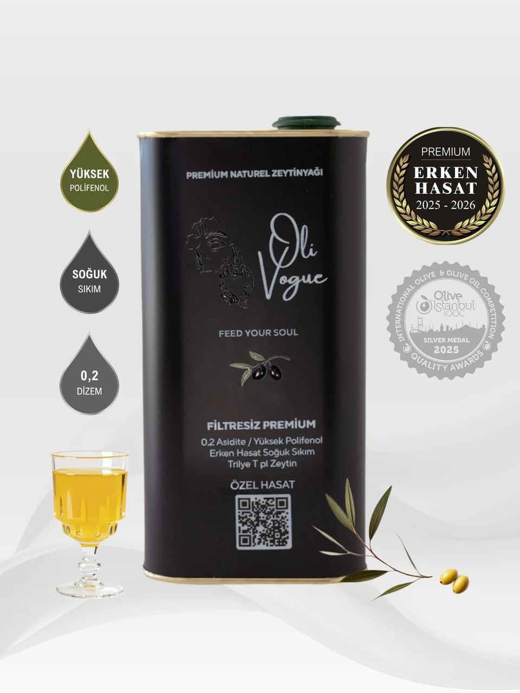
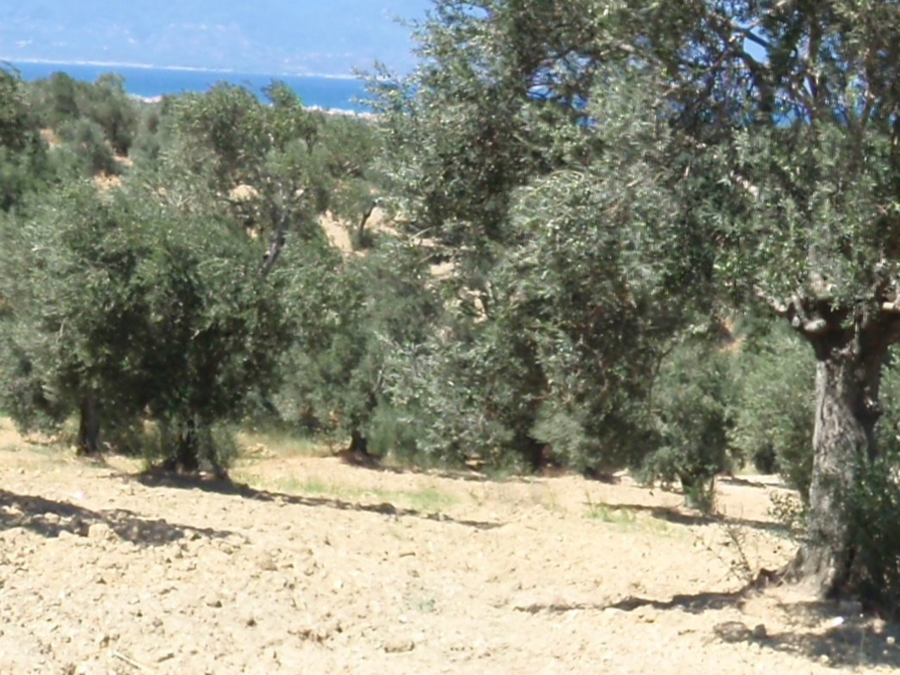
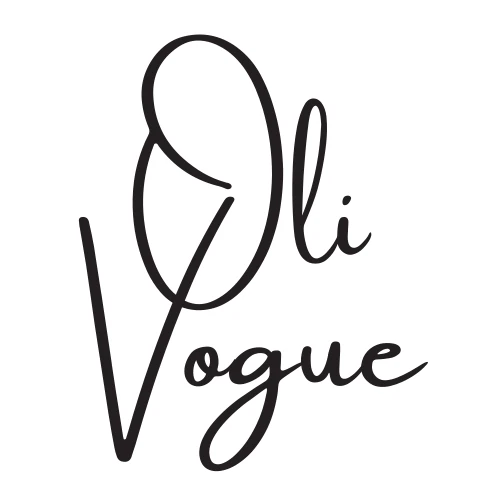

Olivogue
Olivogue, Aydın, Ege çıkışlı bir zeytinyağını daha seçici sofralara yakışacak karakterli bir çizgide sofraya sunar. Sofraya ulaşan her şişede temiz, karakterli ve hatırlanır bir tat bırakması beklenir.
Şişe ve Ürün Görselleri


Olivogue Hakkında
Olivogue hikayesi
Olivogue, daha seçici sofralara yakışacak karakterli bir çizgi sunar. Aydın, Ege çıkışlı bu yağ, özenli seçilmiş, sofrada karakteri hemen fark edilen bir tat anlayışıyla sofraya ulaşır; şişe açıldığında hem lezzet hem güven hissi bırakması beklenir.

Olivogue, Aydın, Ege tarafının karakterini sofraya taşır; şişedeki tat toprağın ve iklimin birlikte kurduğu dengenin uzantısı gibi ilerler.
Hakkımızda sayfasından öne çıkanlar
Hikayesini, 7 kuşak Giritli bir ailenin Gemlik topraklarına kavuşmasıyla kendisi yazdı.

Zeytin ağaçlarını bize miras bırakan atalarımızın kadim öğretilerini bilen son kuşağız.
Ruhumuzun, mitolojide “Ölümsüz Ağaç” olarak bilinen zeytin gibi beslenip, bedenimizin kökleri gibi uzun ömürlü ve dayanıklı olmaya ihtiyacı vardı.
Lezzet ve üretim çizgisi
Ege tarafında yetişen zeytinlerin rüzgarı, güneşi ve uzun mevsim ritmi tadın dengesine doğrudan yansır. Bu doğallık şişede fazla süslenmeden korunduğunda ürün çok daha ikna edici bir hale gelir.
Olivogue anlatılırken önce damakta bıraktığı iz öne çıkar. Memecik tarafının daha yeşil, daha diri ve hafifçe boğazda iz bırakan karakterini korur. Bu yüzden kahvaltıda ekmeğe gezdirildiğinde, salatada son dokunuşta kullanıldığında ya da zeytinyağlı bir yemekte temel lezzeti kurduğunda farklı biçimde karşılık verir.
Olivogue tarafında güçlü görünen nokta yalnızca tat iddiası değildir; şişede verilen söz ile sofrada karşılaşılan lezzetin birbirini tutmasıdır. İyi yağ, kokusuyla temiz açılmalı, damakta akıcı ilerlemeli ve ikinci lokmada da aynı güveni vermelidir.
Bu yağı ilk kez deneyecekseniz önce kullanım anını düşünmek gerekir. Daha canlı ve karakterli bir ifade arayanlar kahvaltı ve çiğ dokunuşlara, daha yumuşak bir akış isteyenler günlük mutfak kullanımına uygun serilere yönelebilir. İlk kez tanışacaksanız küçük hacimle başlayıp damakta bıraktığı izi görün, mutfakta sürekli kullanacaksanız daha büyük ambalaja geçin.
Sofrada kullanım ve seçim
Olivogue alındığında yalnızca bir yağ değil; emeği hissedilen, geldiği yer belli olan ve hangi sofrada parlayacağını bilen bir seçim alınmış olur. Bu yüzden şişenin bıraktığı genel iz, ürünün uzun vadede mutfakta yer bulup bulmayacağını da belirler.
Şişe açıldığında önce gelen koku, sonra dilde bıraktığı akış ve en son boğazda kalan kısa iz, iyi bir zeytinyağını anlatan temel ayrıntılardır. Bu üçü bir araya geldiğinde ürün kendini gerçekten göstermeye başlar.
İster kahvaltı sofrasında ekmeğe gezdirilsin ister salatada son dokunuş olarak kullanılsın, iyi bir şişe her kullanımda aynı güveni vermelidir. Düzenli tercih edilmesini sağlayan şey de bu tutarlılıktır.
Sofrada fark edilen iyi yağ, yalnızca parlak bir etiketle değil, ikinci lokmada da aynı temizliği sürdürebilmesiyle anlaşılır. Kalıcılığı belirleyen şey çoğu zaman tam olarak bu dengedir.
Biz de Oli Vogue’un 7 kuşaklık tecrübesini kök saldığı topraklardan alıp şişelere doldurduk.
Her damlasında ruhunuza ve bedeninize iyi gelmek için sabırsızlanıyoruz.
Kadim öğretilerle şekillenen geleneksel kuşağın bilgeliğini, modern yaşam trendlerine bağlı yeni nesile aktarmak istiyoruz.
Zeytinyağının makul olduğu zamandan, Oli Vogue’un trend olduğu kuşağa uzanan bir yolculuk…
Erken Hasat Zeytinyağları (Salatalar, Mezeler ve Soğuk Başlangıçlar için)
Şişe açıldığında önce gelen koku, sonra dilde bıraktığı akış ve en son boğazda kalan kısa iz, iyi bir zeytinyağını anlatan temel ayrıntılardır. Bu üçü bir araya geldiğinde ürün kendini gerçekten göstermeye başlar.
Şişe açıldığında önce gelen koku, sonra dilde bıraktığı akış ve en son boğazda kalan kısa iz, iyi bir zeytinyağını anlatan temel ayrıntılardır. Bu üçü bir araya geldiğinde ürün kendini gerçekten göstermeye başlar.
Şişe açıldığında önce gelen koku, sonra dilde bıraktığı akış ve en son boğazda kalan kısa iz, iyi bir zeytinyağını anlatan temel ayrıntılardır. Bu üçü bir araya geldiğinde ürün kendini gerçekten göstermeye başlar.
Bölgeler ve Kategoriler
İletişim Bilgileri
- Soğuk sıkım yöntemiyle üretilen premium zeytinyağlarımız, 7 kuşak Gemlik mirasından gelen deneyimle yüksek polifenol içeriği ve eşsiz aromasıyla sofralarınıza lezzet katıyor.
- Hasattan şişelemeye izlenebilir süreç; kimyasal katkı yok, düşük asit oranı (0.2 dizem).